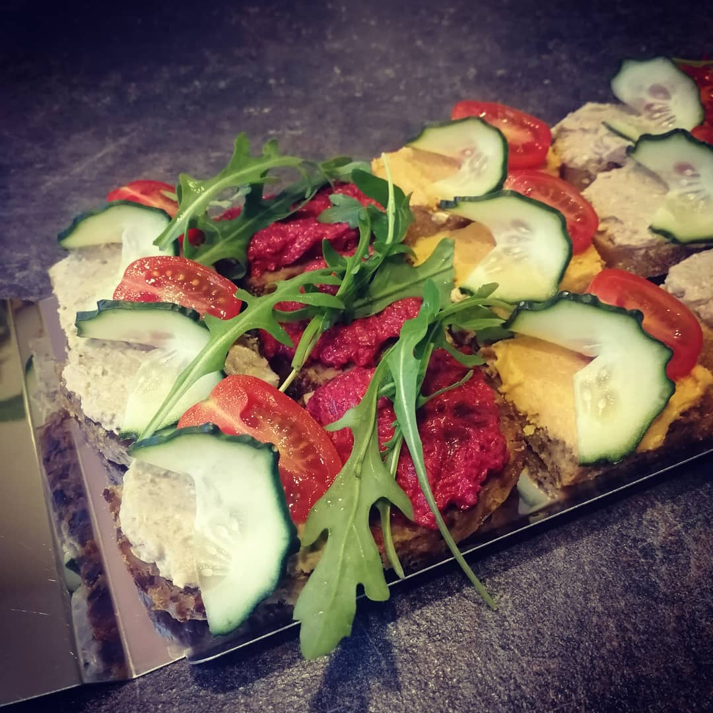

Mäsová pomazánka — Normy Jedál
Ani jednohubky si nemusíme odepírat :)
Pomazánky jsou namazané na bezlepkovém semínkovém chlebu - byl obrovský maraton najít bezl. pečivo, které je trochu k jídlu :). Tenhle chleba je jediný, který občas jím. I tak ho kupuju cca jednou za měsíc. Tento je z lidlu.
Pomazánky jsou :
~Masová - z hovězího masa z polévky, vařeného vajíčka , lžíce tatarky, lžíce kokosového "jogurtu", nastrouhané kyselé okurky, sůl, pepř
~Z pečené řepy - Nastrouhaná zchladlá pečená řepa 2 ks, lžíce tatarky, lžíce kokosové zakysanky, 1/2 najemno nakrájené cibule, sůl, pepř
~Hummus se sušenými rajčaty
#bezlepku #bezmleka #bezlaktozy #ABKM #potravinovealergie #intolerancelaktozy #jednohubky #pomazanky #masovapomazanka #pomazankazpecenerepy #hummus #jednohubkybezlepku